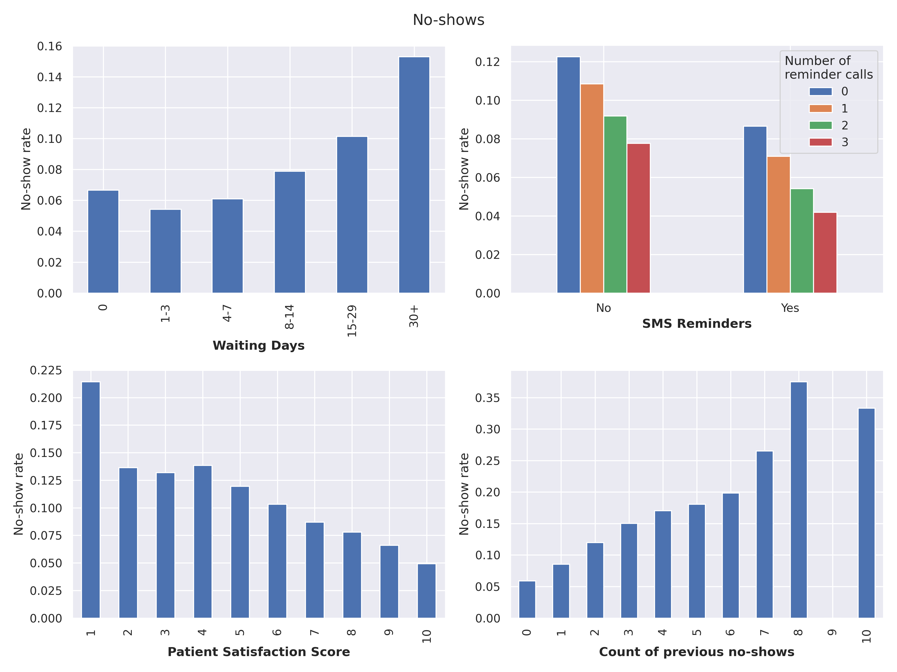
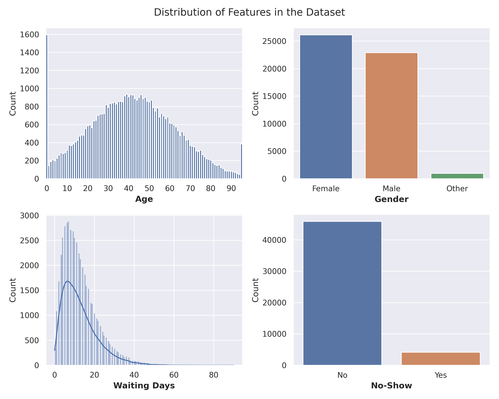
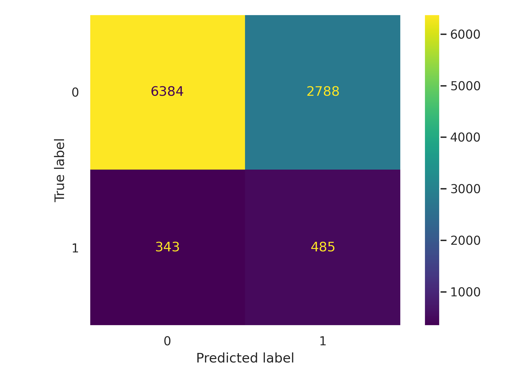

Predicting Appointment No-Shows
Introduction
1. Key Results
Will a patient show up for a scheduled medical appointment?
Through Exploratory Data Analysis (EDA) and machine learning, I built models to predict ‘No-shows’.
- No-show rate rises with longer waiting period
- The event of previous no-shows increases the pobability of another no-show in the future
- SMS reminders and call reminders both lower the no-show rate

2. Why it Matters
‘No-shows’ - patients who booked an appointment but do not show up - have a real impact on a clinic’s schedule and revenue.
No-shows waste clinician time, push back waiting lists, and quietly worsen outcomes for the very patients who don’t turn up. If a clinic could flag the ~10% of bookings most at risk, it could target reminders, overbook intelligently, or reach out personally — turning a prediction into fewer gaps in care.
3. The Data
The dataset from Kaggle “Synthetic Healthcare Appointment No-Show Dataset” consists of 50,000 scheduled medical appointment. Each row is one scheduled visit, described by features like age, waiting days, previous no-shows, patient satisfaction score, SMS / reminder calls, weekday, and appointment type. The target is no_show (0 = attended, 1 = missed).
Link to the public dataset: https://www.kaggle.com/datasets/emirhanakku/synthetic-healthcare-appointment-no-show-dataset

Methods & Results
4. What I did
The workflow was a simple pattern: EDA → preprocessing → baseline models → fine-tuning → evaluation.
Explored the Healthcare Appointment No-Show Dataset with visuals — distributions, correlations, and feature effects. Cleaned numeric features with Imputer (median) + StandardScaler and categorical variables with Imputer (most-frequent) + OneHotEncoder.
Trained a Dummy, SGD, Linear SVM, a Decision Tree, and a Random Forest, then fine-tuned the best baseline models.
Because the classes are so imbalanced, accuracy is useless here — a model that predicts “show” every time scores 92%.
So I evaluated on ROC-AUC, Precision, Recall, and F1-Score, used class_weight=“balanced” to stop the models ignoring the minority class, and validated with 10-fold stratified cross-validation.
5. What I Found
A few patterns came through cleanly in the EDA:
Waiting time matters. The longer the gap between booking and appointment, the higher the no-show rate — patients forget, or life gets in the way.
Reminders work. Both SMS and reminder calls measurably lowered the no-show rate, with the two combined doing best.
Past behaviour predicts future behaviour. Each additional previous no-show pushed the probability of skipping up sharply.
Satisfaction tracks attendance. Lower patient satisfaction scores lined up with higher no-show rates.
On performance, the linear models won. The Random Forest posted decent AUC but collapsed on recall (it barely caught any no-shows), while the Decision Tree was little better than guessing.
| Model | roc_auc | precision | recall | f1 | |
|---|---|---|---|---|---|
| 0 | Dummy | 0.50 | 0.00 | 0.00 | 0.00 |
| 1 | SGD | 0.67 | 0.14 | 0.62 | 0.22 |
| 2 | SVM | 0.71 | 0.15 | 0.63 | 0.24 |
| 3 | DecisionTree | 0.52 | 0.12 | 0.12 | 0.12 |
| 4 | RandomForest | 0.68 | 0.44 | 0.00 | 0.01 |
The tuned SGD classifier came out on top and became the final model, with a cross-validated ROC-AUC of ~0.71. On the held-out test set, the trade-off the imbalance forces becomes obvious: the model catches 59% of true no-shows (recall), but only 15% of its no-show flags are correct (precision). In plain terms — it’s a useful early-warning, not a verdict.

Conclusion
6. What I Learned
The biggest lesson was that the metric defines the model. On data this imbalanced, accuracy rewards a model for doing nothing useful, so choosing ROC-AUC, recall, and F1 — and setting class_weight=“balanced” — was what made the project work at all.
The model’s “failure” is worth naming honestly. A precision of 15% means most flagged patients would still have attended. But in a clinic, that’s an acceptable trade: the cost of a reminder SMS is near zero, while the cost of a missed appointment is high. A high-recall, low-precision model is exactly what you want for a cheap, low-risk intervention — you’d rather over-remind than miss the patients who genuinely won’t come.
7. What’s Next
Test this thinking on a real-world appointment dataset, where the messiness of human behaviour makes the problem genuinely worth solving.
While this is synthetic data, the core logic can be used to solve the real world problem: target the right metric, respect the imbalance, and build around a realistic clinical action.